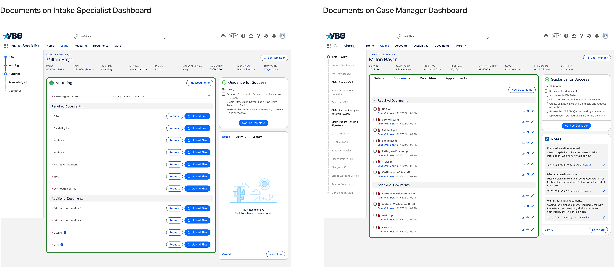
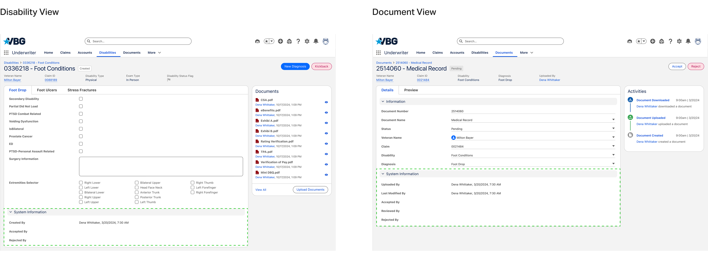

In Sugar CRM, everyone could edit everything. Work was being silently undone, data conflicted, and nobody owned anything. After rebuilding the architecture, I redesigned how each role moves through a claim — so five teams could finally share one system without colliding.
Outcome, up front
2×
claim submissions within one month of launch
Fewer errors
accidental changes by the wrong teams ended once access followed roles
Clear owners
every task and review gained a named, traceable owner — less confusion, less rework
Highlights — four views, one system
PROBLEM
Reviewing the claim submission process, I found the root problem quickly: every role had access to everything, with no permission controls. Anyone could edit any record. Duplicate entries and conflicting data were routine, employees sifted through information that wasn’t theirs, and — worst of all — people unknowingly undid each other’s work. Claim submissions dropped; revenue followed.
I interviewed team leaders to map the entire claim workflow: which role does what, with which materials, which steps can run in parallel, and where reviews must happen. Two scoping insights came out of it. The Network Support Coordinator and Mail Clerk work in a third-party platform — their workflows didn’t belong in Sugar at all. The four roles that did were:
01
Builds the packet
Intake Specialist
Creates leads, fills initial information, uploads first documents, builds the claim packet, collects signatures
02
Runs initial review
Case Manager
Sees all veteran information, creates disabilities and diagnoses
03
Checks the documents
Underwriter
Reviews all uploaded documents for accuracy
04
Signs off
Case Review Specialist
Final verification of documents and completed questionnaires
FIX
Fix 01
I separated dashboards by role, so logging in lands you on your tasks and nothing else. On Lead and Claim views, the progress bar became role-aware: Intake Specialists get a standalone bar, since their phase runs first and independently; Case Managers, Underwriters, and Case Review Specialists share a bar showing the full process — but can only interact with their assigned steps.
Content follows the same rule: what’s visible depends on role and task stage, and each phase ends with a review checkpoint that prevents duplicate entries and unintended changes from leaking downstream.
Fix 02
Intake is inherently sequential, so Intake Specialists got a linear, step-by-step flow: only the current task’s information is visible, tasks are confirmed complete before moving on, and completed steps stay revisitable while future ones stay closed.
Review work is non-linear, so Case Managers, Underwriters, and Case Review Specialists got tab-based navigation instead — tabs ordered by task priority, the system advancing to the next tab on completion, with free movement back for review and updates. Same system, two rhythms.
Fix 03
Documents and disabilities pass through multiple reviews, so I made the interaction depend on status and role: upload actions in the Intake phase, review actions for everyone downstream. Checkboxes beside each document let reviewers mark progress and resume cleanly after interruptions — a small addition that removed a constant source of lost place.

Fix 04
Before submitting, users must actively check off tasks and click “Mark as Complete” — a deliberate confirmation that puts a name on the work and measurably reduced careless errors.
For reviewed items, a System Information section automatically records who created, accepted, and rejected each one. The record can’t be altered, giving team leads full traceability — who did what, and when — without anyone filing a report.

Reflection
The fixes that mattered most were small: organizing tasks in the order people do them, and asking for one deliberate confirmation. Given another pass, I’d explore automating the handoffs between phases — but turning a messy free-for-all into a smooth, owned process was the win that counted.
Next case study
The Two-Minute Deal →